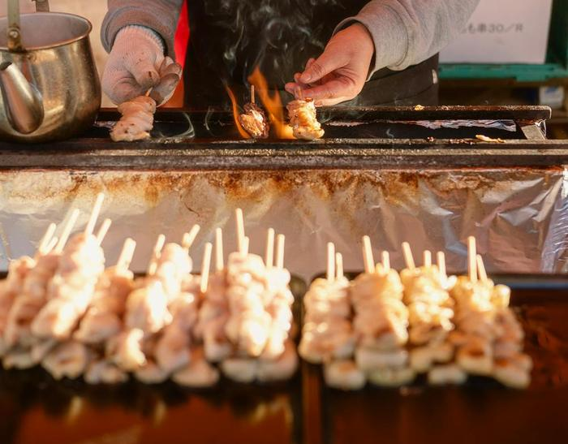

お店の地図アプリの店舗情報の整え
地図アプリのお店の情報を、
いまのお店に合わせます。
地図アプリでお店を見つけた人は、そこに出ている営業時間や写真を見てから来ます。そこが何年も前のままだと、休みの日に来てしまったり、何の店か分からず素通りされたりします。営業時間・説明文・カテゴリー・写真・メニューを、いまのお店に合わせて整えます。
12,000円（税込）材料がそろってから3営業日
Googleビジネスプロフィールのような、地図アプリに出るお店の情報が対象です。
整える前と、整えた後
架空の居酒屋「炭火やきとり 見本亭」で、よくある抜けや古さを並べました。番号は下の説明と同じです。


炭火やきとり 見本亭（架空）
4鶏肉店
3お店の説明はありません
- 月
- 17:30〜22:00
- 火〜日
- 17:30〜22:00
7電話番号はありません
6メニューはありません
見本県見本市見本町2-3-4（架空）

 ほか6枚
ほか6枚
炭火やきとり 見本亭（架空）
4焼き鳥店・居酒屋
3炭火で一本ずつ焼く焼き鳥と、注文ごとに揚げる唐揚げの店です。カウンター8席・座敷16席。見本駅の北口から歩いて8分。
- 月
- 定休日
- 火〜日
- 17:00〜23:00
祝日の月曜は営業し、翌日の火曜が休みです
7054-000-0000
見本県見本市見本町2-3-4（架空）
何を変えて、お客さんに何が変わるか
-
営業時間を、いまの時間に
17:30〜22:00 のままだったのを、17:00〜23:00 に直しました。
開店前に着いて待つ人や、21時すぎに「もう閉まる」と思ってあきらめる人が減ります。
-
定休日と祝日を入れる
月曜が営業中と出ていたので、定休日にしました。祝日の月曜と、その翌日の火曜は、その週だけの営業時間として先に入れておきます。
休みの日に来て、閉まった戸の前で引き返す人を減らせます。
-
お店の説明文を書く
空だった説明を、何の店か・席の数・駅からの道のりの3行にしました。「日本一」のような言い切りは入れません。
初めての人が、自分の使い方（一人飲み・宴会）に合う店かを、来る前に判断できます。
-
カテゴリーを合わせる
「鶏肉店」になっていたのを、「焼き鳥店」をいちばんに、「居酒屋」を2番目にしました。
肉屋さんと間違われにくくなり、焼き鳥の店を探している人に、何の店かが伝わります。検索の順位が上がるとはお約束できません。
-
写真を明るく、10枚まで
暗い2枚を、料理・焼き台・店内・入口の写真に入れ替えます。撮るのはお店の方のスマホで十分です。撮り方のメモ（PDF）をお送りし、届いた写真から選んで並べます。
料理やお店の様子が写真で分かると、行くかどうかを決めやすくなります。明るさは少し整えますが、実物と違って見える加工はしません。
-
メニューと値段を入れる
なかったメニューに、よく出る品と宴会のコースを、税込の値段で入れました。
「いくらくらいの店か」が分かると、初めての人も入りやすくなります。
-
電話番号を入れる
抜けていた電話番号を入れました。
スマホで押せばそのまま電話がかかるので、席の予約や「いま空いてますか」の問い合わせがすぐできます。
ちょっとした話ですが、営業時間を直しても、年末年始や臨時休業を入れ忘れると同じことが起きます。整えるときに、この先の休みの予定もいっしょにうかがいます。
お店の方にしていただくこと、工房がすること
お店の方
- お店の情報の持ち主として、本人の確認（オーナー確認）をすませる
- ラクワーク工房を「管理者」として招く（やり方の手順はPDFでお送りします。オンラインで画面を見ながら一緒に進めることもできます）
- 営業時間・休みの予定・メニューと値段を、メールで送る
- 写真をスマホで撮って送る
- 入れる前の内容を見て、よければ「これで」と返事をする
ラクワーク工房
- オンラインかメールで、30分ほどお話を聞く
- 説明文の下書き、カテゴリーの案、写真の選びと並べ
- OKをいただいた内容を、管理者として入れる
- 表示が合っているかを確かめ、変えた所の一覧（PDF）をお渡しする
持ち主の権限はお店のままで、工房は持ち主になりません。パスワードはうかがいません。終わったら管理者の招待を外してください。何をどう整えるかは私が考え、文の下書きは生成AIと一緒に作っています。入れた内容は、私がしっかり確認してからお知らせします。
値段
店舗情報の整え
12,000円（税込）
材料がそろってから3営業日
営業時間・説明文・カテゴリー・写真10枚まで・メニューの整理。お支払いは、整えた内容を見ていただいてから、14日以内のお振込みです。
そのあとの更新（ご希望なら）
月6,000円（税込）
ご依頼から3営業日
店舗情報への投稿 月2件、口コミへの返信の下書き。ホームページがあれば、その書き換えも月2回まで。営業時間が変わるときは、メール1通で、地図アプリとホームページの両方を直します。最低の契約期間はなく、1か月ごとにやめられます。
口コミは、返信の下書きまでです。出すのはお店の方が確かめてから。こちらから口コミを書くこと、消すこと、お礼と引き換えに頼むことはしません。ラクワーク工房は、地図アプリを運営する会社の代理店や提携先ではありません。適格請求書（インボイス）は発行できません。
まず、いまの表示を見てみませんか。
いまの表示で気になっている所を、メールで教えてください。最初の30分のお話（オンラインかメール）は無料で、そのあと頼まなくてもかまいません。